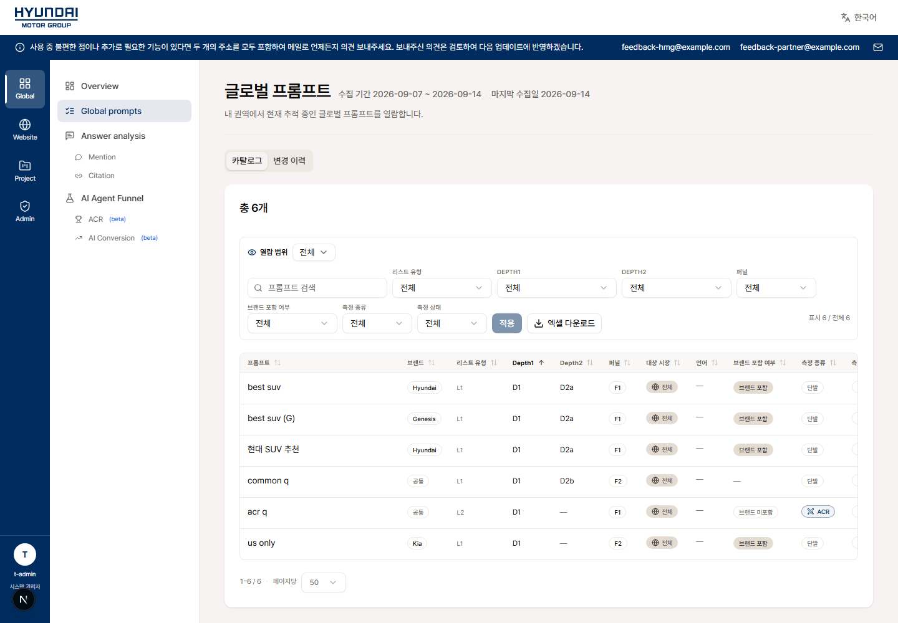
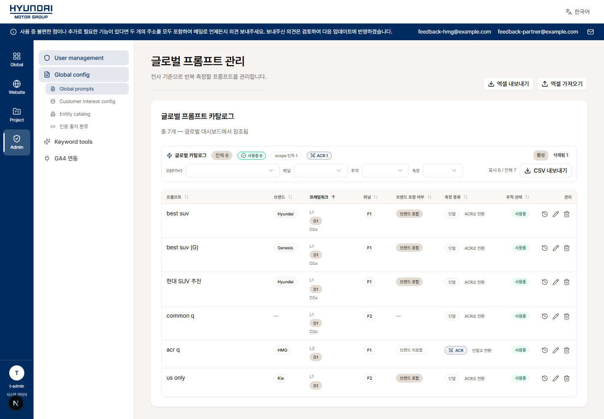
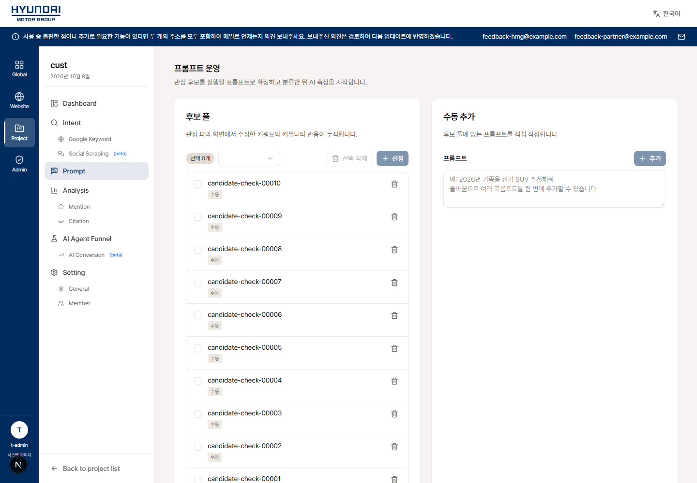

화면별 내부 리팩토링 점검표
화면을 기준으로 수정 전 문제, 내부 수정, 검증 근거와 재확인 절차를 한 행에서 확인합니다.
기존 기능·디자인·메뉴·사용 흐름·산식·권한을 보존하며, 독립 복사본에서 SW01~SW15의 내부 처리와 직접 연결된 오류 경로를 수정했습니다. 기존 Next.js + FastAPI 구성을 유지했습니다. 운영 배포나 운영 데이터 변경은 하지 않았습니다.
15개 화면·공통 경로 중 15개 행 수정·자동 검증 완료. 실제 브라우저에서는 목록 3개·관리자 조회 2개·QA 상세, 총 6개 화면을 확인했습니다. 공유 함수만 검증한 화면은 아래에 별도 표시했습니다.
프런트 전체: 8,310 통과 · 88 실패 · 151 건너뜀. 변경 전 f6f6f54에서도 동일한 88개 시험이 실패했고 신규 실패는 0개입니다(변경 전 8,244 통과). 마지막 목록 관련 87개, 별도 실제 PostgreSQL 3개 통과. 백엔드 목록·관리자·프로젝트 257개 및 워커·감시·pull 93개 통과. 수치가 겹치는 재검사는 합산하지 않았습니다. TypeScript·변경 파일 ESLint·Ruff·생성 API 계약 일치 확인 완료.
테스트 연결 대상과 데이터 변경 범위
초기 리팩토링 검증은 로컬 Next·API·합성 PostgreSQL·모의 인증으로만 수행했고, 그때의 인증 기록은 로그인 1회·공개키 조회 24회였습니다. 시험 DB에 대량 픽스처·QA 판정·태그를 저장하고 당시 서버를 종료했습니다. 이후 사용자 확인 요청으로 다시 실행했으며, 성능 점검 후 현재 프런트는 127.0.0.1:3130에서 운영 빌드로 실행 중입니다. (이 프리뷰와 작업 폴더는 2026-10-16 폐기, 이후 데모·검증은 127.0.0.1:3200) 로컬 API 18080·DB 25432·인증 54399를 사용합니다. 이번 측정의 자동 로그인은 로컬 1회이며 운영 서버에는 연결하지 않았습니다.
프런트 실행 시 외부 통신 차단 장치를 적용했고 외부 서비스 자격증명은 사용하지 않았습니다. 로컬 로그인 세션·비밀 값·원시 인증 로그는 보고서에 포함하지 않았습니다.
후속 확인 · 로컬 실행 성능
사용자의 로컬 체감 지연 제보 후 확인했습니다. next dev의 최초 화면 컴파일이 2.4~5.6초, 요청 전체가 4.5~8.2초였습니다. 같은 소스 b67d5eb를 운영 빌드(next start)로 실행해 반복 진입을 비교했습니다: 프롬프트 1.95→0.43초, 대시보드 1.19→0.20초, 웹사이트 홈 1.04→0.26초, 언급 분석 1.41→0.29초. 압축 해제된 JS는 15~27MB→0.7~1.5MB였고 직접 측정한 로컬 API 5개는 23~78ms였습니다. 검색 입력부터 결과 확인은 0.69→0.59초로, 초기 진입과 같은 폭으로 줄지는 않았습니다. 소량 분석 픽스처·대량 프롬프트를 사용한 로컬 표본이며 운영 데이터 성능을 보증하지 않습니다.
검증 범위와 반영 전 확인 사항
- GA4·키워드 캐시 수정은 기존 legacy 직접 조회 경로에 적용됩니다. API 소스 경로의 운영 지표를 검증한 기록으로 읽으면 안 됩니다.
- 운영 DB·실제 GA4·Scope·DataForSEO·운영 인증 서버와 연동하거나 배포하지 않았습니다. 로컬 운영 빌드는 후속 점검에서 통과했으며, 실제 배포 환경의 연동 검증은 별도입니다.
- 목록은 추가된 읽기 전용 POST 4개를 사용하므로 새 백엔드를 먼저 반영한 뒤 프런트와 호환성을 맞춰야 합니다. 운영 DB의 en-x-icu / ko-x-icu 사용 가능 여부는 배포 전에 확인해야 합니다(로컬 PG17에서 확인).
- 전체 프런트 검사에 기존 실패 88개가 남아 있습니다. 검증 요약 JSON에 실패 시험명과 파일을 공개했습니다. 전체 검사 통과로 표시하지 않습니다.
- Scope 생성 결과 불명과 DFS 과금 결과 불명은 운영자가 공급자 결과를 확인한 뒤 복구해야 합니다. Scope 보류 행은 DB의 last_error로 확인하며 이번 범위에 전용 경보를 추가하지 않았습니다.
- 각 행의 체크박스는 사용자가 수정 화면을 다시 확인하기 위한 절차입니다. 실제 수행 여부는 검증 근거 열을 기준으로 읽습니다.
| 화면 / 경로 / 점검 ID | 수정 전 문제 | 내부 수정과 보존 항목 | 현재 상태 / 검증 근거 | 수정 후 화면 확인 절차 |
|---|---|---|---|---|
QA 답변 상세 · 판정 저장/{locale}/raw-data-qa/answers/{jobId}SW04, SW09 |
저장 실패 후 이전 저장됨 표시가 남고, 잠금 획득·갱신 실패가 편집 상태에 반영되지 않았습니다. | 잠금·저장 상태를 분리하고 15초 기한, 응답 검증, 중복 저장 방지, 늦은 응답 무시를 적용했습니다. 실패 시 판정 입력을 유지하고 잠금 확인 전·상실 후 편집과 메모 단축키를 차단합니다.보존: 기존 배치·판정 규칙·메모 동선·오류 표시 위치·정상 문구 | 수정·자동 검증 완료 신규 상태 회귀 31개를 포함해 QA 관련 136개 통과. 이전 수정 커밋 1e85d59 포함. 화면 확인: 로컬 실제 화면 4조건 통과: 저장 500에서 입력 유지/성공 표시 없음 → 재시도 후 새로고침 값 유지; heartbeat 실패와 초기 잠금 503에서 편집 차단. review-session.test.tsbrowser-qa-results.json qa-save-failed.png qa-lock-failed.png |
|
표준 프롬프트 조회/{locale}/standard/promptsSW01 |
표는 50행이어도 전체 프롬프트를 먼저 조회·전송했습니다. | 서버에서 조건·정렬을 적용한 페이지를 읽습니다(기본 50행). 옵션·총건수·열 표시는 전체 조건으로 계산하고, 명시적인 전체 내보내기는 500행씩 읽어 누락·중복·건수 변화를 검사합니다. 한국어 브라우저 정렬도 유지합니다.보존: 검색·종속 필터의 적용/리셋·정렬·25/50/100행·총건수·엑셀 전체 내보내기 | 수정·자동 검증 완료 API 목록 관련 257개 묶음 통과. 목록·동등성·내보내기 최종 87개 및 실제 PostgreSQL legacy 조회 3개 통과. 화면 확인: 12,005건 검색에서 50행, 다음 페이지 51번, 100행 전환 확인. Depth2 초안은 적용 전 미반영, 적용 후 6,003건. XLSX 12,005개 데이터와 정렬 순서 확인. 원본/수정 정상 화면 캡처 일치. catalog-page.test.tstest_screen.py browser-standard-results.json standard-verified.png |
|
관리자 표준 프롬프트/{locale}/admin/standards/promptsSW02, SW03 |
전체 행 DOM 렌더링과 API 누적 1만 건 상한 때문에 대량 목록이 느려지거나 실패했습니다. | 서버 조건 조회와 최대 200행 가상 렌더링을 적용했습니다. 기존 문서 스크롤을 유지하고 전역 통계·필터 옵션·CSV 전체 내보내기를 분리했습니다.보존: 기존 표·정렬·필터·통계·등록/수정·삭제됨 보기·복원·CSV | 수정·자동 검증 완료 권한·범위·대량 페이지와 프런트 legacy/API 동등성 시험 통과. ICU 정렬은 실제 PostgreSQL에서도 확인. 화면 확인: 12,005건에서 마지막 행까지 스크롤, DOM 최대 200행 확인. CSV 12,005건, 삭제됨 1건과 복원 버튼 확인. 한국어 초기 정렬 요청 확인. 실제 삭제/복원 쓰기는 이 화면 시험에서 실행하지 않았습니다. admin.parity.test.tsbrowser-admin-results.json admin-deep.png admin-verified.png |
|
프로젝트 프롬프트 운영 · 후보 풀과 확정 목록/{locale}/projects/{id}/promptSW02, SW03, SW05 |
후보·프롬프트 전체 렌더링과 2만 건 조회 상한이 있었습니다. 일괄 태그 일부 저장도 전체 실패처럼 반환했습니다. | 두 목록에 서버 정렬·페이지 조회·최대 200행 렌더링을 적용했습니다. 전체 선택은 본문 대신 ID만 끝까지 읽습니다. 화면 밖 미저장 태그 입력도 보존합니다. 1,000건 묶음 저장의 확인된 ID와 남은 ID를 구분해 선택·입력·재시도에 반영합니다.보존: 후보 풀·수동 등록·기존 순서·전체 선택·태그·개별 편집·전체 내보내기·권한 | 수정·자동 검증 완료 25,001개 후보/프롬프트 SQL 시험, legacy/API 동등성, 1,000건 초과 부분 실패·응답 건수 불일치·중간 권한 실패 시험 통과. 화면 확인: 25,002건 전체 선택, 후보 정렬, 마지막 프롬프트 스크롤, 미저장 입력의 스크롤 후 복원 확인. 두 번째 저장 묶음 503 → 1,000건 확인·24,002건 선택 유지 → 남은 건 재시도 성공. 로컬 DB 값 25,002건 확인. test_screen.pyprojects.test.ts browser-project-results.json browser-final-results.json bulk-partial-failed.png |
|
표준 AI 퍼널 · 전환/{locale}/standard/ai-funnel/conversionSW06, SW07, SW15 |
legacy 설정 DB 실패가 기본 keyEvents로 바뀌거나, 일부 조회 실패 합계가 정상 결과로 캐시되고 GA4 대기가 길어질 수 있었습니다. | legacy GA4 경로에서 설정 없음과 설정 DB 오류를 구분합니다. 부분 국가 실패는 정상 합계·캐시로 저장하지 않고 기존 조회 불가 표시로 전달합니다. 캐시 키를 새 버전으로 전환하고 인증 대기·HTTP·재시도를 포함해 호출당 30초 기한을 적용했습니다.보존: 국가·지역·HQ 합계·전환 산식·필터·카드·설정 동선 | 수정·자동 검증 완료 공유 GA4 설정/집계 회귀 6개와 HTTP 기한/재시도 5개 통과. 실제 GA4 자격증명·요청은 사용하지 않았습니다. 화면 확인: 화면별 실제 GA4 연동은 미실행. 공유 함수 모의 실패 검증 완료. API 소스 전환 시의 백엔드 집계는 이 수정 대상이 아닙니다. conversion.failures.test.tsclient.test.ts |
|
웹사이트 AI 퍼널 · 전환/{locale}/website/ai-funnel/conversionSW06, SW07, SW15 |
legacy 설정 DB 실패가 기본 keyEvents로 바뀌거나, 일부 조회 실패 합계가 정상 결과로 캐시되고 GA4 대기가 길어질 수 있었습니다. | legacy GA4 경로에서 설정 없음과 설정 DB 오류를 구분합니다. 부분 국가 실패는 정상 합계·캐시로 저장하지 않고 기존 조회 불가 표시로 전달합니다. 캐시 키를 새 버전으로 전환하고 인증 대기·HTTP·재시도를 포함해 호출당 30초 기한을 적용했습니다.보존: 웹사이트 브랜드·국가/지역 합계·전환 산식·필터·카드·설정 동선 | 수정·자동 검증 완료 공유 GA4 설정/집계 회귀 6개와 HTTP 기한/재시도 5개 통과. 실제 GA4 자격증명·요청은 사용하지 않았습니다. 화면 확인: 화면별 실제 GA4 연동은 미실행. 공유 함수 모의 실패 검증 완료. API 소스 전환 시의 백엔드 집계는 이 수정 대상이 아닙니다. conversion.failures.test.tsclient.test.ts |
|
프로젝트 AI 퍼널 · 전환/{locale}/projects/{id}/ai-funnel/conversionSW06, SW07, SW15 |
legacy 설정 DB 실패가 기본 keyEvents로 바뀌거나, 일부 조회 실패 합계가 정상 결과로 캐시되고 GA4 대기가 길어질 수 있었습니다. | legacy GA4 경로에서 설정 없음과 설정 DB 오류를 구분합니다. 부분 국가 실패는 정상 합계·캐시로 저장하지 않고 기존 조회 불가 표시로 전달합니다. 캐시 키를 새 버전으로 전환하고 인증 대기·HTTP·재시도를 포함해 호출당 30초 기한을 적용했습니다.보존: 프로젝트 단일 국가 전환·전환 산식·필터·카드·설정 동선 | 수정·자동 검증 완료 공유 GA4 설정/집계 회귀 6개와 HTTP 기한/재시도 5개 통과. 실제 GA4 자격증명·요청은 사용하지 않았습니다. 화면 확인: 화면별 실제 GA4 연동은 미실행. 공유 함수 모의 실패 검증 완료. API 소스 전환 시의 백엔드 집계는 이 수정 대상이 아닙니다. conversion.failures.test.tsclient.test.ts |
|
대시보드 · GA4 카드/{locale}/dashboardSW06, SW07, SW15 |
공유 legacy GA4 함수의 설정 오류·부분 집계 캐시·요청 지연이 카드에도 영향을 줍니다. | 공유 GA4 함수의 오류 전파·캐시 버전·30초 호출 기한 변경이 적용됩니다. 화면별 계산식이나 정상 카드 마크업은 변경하지 않았습니다.보존: 기존 카드 디자인·지표 의미·조회 불가 상태 | 수정·자동 검증 완료 공유 GA4 설정/집계 회귀 6개와 HTTP 기한/재시도 5개 통과. 실제 GA4 자격증명·요청은 사용하지 않았습니다. 화면 확인: 카드의 실제 GA4 통합 확인은 미실행. 적용 범위는 legacy 경로이며 API 집계 경로의 운영 수치를 검증한 결과가 아닙니다. conversion.failures.test.tsclient.test.ts |
|
프로젝트 홈 · GA4 카드/{locale}/projects/{id}SW06, SW07, SW15 |
공유 legacy GA4 함수의 설정 오류·부분 집계 캐시·요청 지연이 카드에도 영향을 줍니다. | 공유 GA4 함수의 오류 전파·캐시 버전·30초 호출 기한 변경이 적용됩니다. 화면별 계산식이나 정상 카드 마크업은 변경하지 않았습니다.보존: 기존 카드 디자인·지표 의미·조회 불가 상태 | 수정·자동 검증 완료 공유 GA4 설정/집계 회귀 6개와 HTTP 기한/재시도 5개 통과. 실제 GA4 자격증명·요청은 사용하지 않았습니다. 화면 확인: 카드의 실제 GA4 통합 확인은 미실행. 적용 범위는 legacy 경로이며 API 집계 경로의 운영 수치를 검증한 결과가 아닙니다. conversion.failures.test.tsclient.test.ts |
|
관리자 인용 출처 분류/{locale}/admin/standards/citation-sourcesSW08 |
일부 API/legacy 조회 실패를 빈 목록으로 바꾸어 장애가 데이터 없음처럼 보였습니다. | 실패를 기존 대시보드 오류 경계에 전달합니다. 실제 정상 0건은 그대로 표시하고, 엔티티 버전 관리의 기존 게이트·공지 동선은 유지합니다.보존: 정상 표·빈 결과·등록/수정 흐름·버전 게이트·권한 | 수정·자동 검증 완료 페이지 함수의 API/legacy 오류와 정상 빈 결과 5개 및 기존 동등성 시험 통과. 화면 확인: 실제 로컬 API 정상 조회 → 503 주입 시 기존 오류 화면 → 다시 시도 후 정상 화면 복구 확인. admin-read-failure.test.tsbrowser-final-results.json citation-sources-failed.png |
|
관리자 엔티티 카탈로그/{locale}/admin/standards/entitiesSW08 |
일부 API/legacy 조회 실패를 빈 목록으로 바꾸어 장애가 데이터 없음처럼 보였습니다. | 실패를 기존 대시보드 오류 경계에 전달합니다. 실제 정상 0건은 그대로 표시하고, 엔티티 버전 관리의 기존 게이트·공지 동선은 유지합니다.보존: 정상 표·빈 결과·등록/수정 흐름·버전 게이트·권한 | 수정·자동 검증 완료 페이지 함수의 API/legacy 오류와 정상 빈 결과 5개 및 기존 동등성 시험 통과. 화면 확인: 실제 로컬 API 정상 조회 → 503 주입 시 기존 오류 화면 → 다시 시도 후 정상 화면 복구 확인. admin-read-failure.test.tsbrowser-final-results.json entities-failed.png |
|
프로젝트 관심 파악 · Google 키워드/{locale}/projects/{id}/intent/google-keywordSW14 |
legacy 키워드 캐시가 DB 오류 한 번으로 프로세스 재시작 전까지 비활성화됐습니다. | 30초 후 한 요청만 캐시 복구를 확인하고 성공하면 재사용합니다. 읽기·쓰기 복구 모두 적용합니다.보존: 키워드 결과·기존 TTL·캐시 장애 중 기존 조회 경로 | 수정·자동 검증 완료 캐시 읽기·쓰기·반복 장애·동시 복구 검사 4개 통과. 화면 확인: 공유 legacy 함수 검증만 완료. 유료 API와 화면별 실제 키워드 요청은 실행하지 않았습니다. cache.test.ts |
|
고객 관심 · Google 키워드/{locale}/customer-interest/google-keywordsSW14 |
legacy 키워드 캐시가 DB 오류 한 번으로 프로세스 재시작 전까지 비활성화됐습니다. | 30초 후 한 요청만 캐시 복구를 확인하고 성공하면 재사용합니다. 읽기·쓰기 복구 모두 적용합니다.보존: 키워드 결과·기존 TTL·캐시 장애 중 기존 조회 경로 | 수정·자동 검증 완료 캐시 읽기·쓰기·반복 장애·동시 복구 검사 4개 통과. 화면 확인: 공유 legacy 함수 검증만 완료. 유료 API와 화면별 실제 키워드 요청은 실행하지 않았습니다. cache.test.ts |
|
관리자 키워드 도구/{locale}/admin/keyword-toolsSW14 |
legacy 키워드 캐시가 DB 오류 한 번으로 프로세스 재시작 전까지 비활성화됐습니다. | 30초 후 한 요청만 캐시 복구를 확인하고 성공하면 재사용합니다. 읽기·쓰기 복구 모두 적용합니다.보존: 키워드 결과·기존 TTL·캐시 장애 중 기존 조회 경로 | 수정·자동 검증 완료 캐시 읽기·쓰기·반복 장애·동시 복구 검사 4개 통과. 화면 확인: 공유 legacy 함수 검증만 완료. 유료 API와 화면별 실제 키워드 요청은 실행하지 않았습니다. cache.test.ts |
|
측정·동기화·키워드 상태에 영향을 주는 공통 워커프로젝트 생성 / 프롬프트 등록 / 키워드 수집 / 운영 감시SW10, SW11, SW12, SW13 |
DFS running 고착, Scope 생성 ID 없는 완료, daily 실패 후 당일 재시도 누락, 긴 pull에 의한 큐 지연이 있었습니다. | DFS는 600초 호출 기한·15분 임대 회수·소유권 검사로 복구합니다. Scope는 120초 기한·5분 임대·UUID 확인·ID 되쓰기/완료 원자성을 적용합니다. 불확실한 생성·과금 요청은 자동 재전송하지 않고 결과 확인 상태로 남깁니다. 주기 작업을 독립 실행하고 daily 실패는 백오프 후 재시도합니다.보존: 측정 정책·유료 호출 실행 조건·성공 데이터 계약·기존 운영 진입점 | 수정·자동 검증 완료 워커·감시·pull 관련 93개 통과. 신규 복구 14개 포함. 최종 변경 재확인 24개(목록 일부 포함)는 앞선 시험과 중복되는 별도 확인입니다. 화면 확인: 직접 화면 없음. 가짜 외부 공급자와 실제 로컬 PostgreSQL에서 검증. Scope·DataForSEO 실제 호출/과금 없음. 결과 불명 요청의 운영 복구는 문서 절차에 따라 별도 실행합니다. test_worker_recovery.pytest_scheduler_recovery.py README.md |


기존 화면과 수정 화면 비교 3쌍
동일한 로컬 소량 픽스처로 찍은 캡처입니다. 세 쌍의 파일 해시가 일치했습니다. 대량 목록·장애·입력 유지 시험은 각 행의 별도 캡처와 결과 JSON에서 확인할 수 있습니다. 모든 동적 상태의 픽셀 동등성을 보증하는 비교는 아닙니다.







